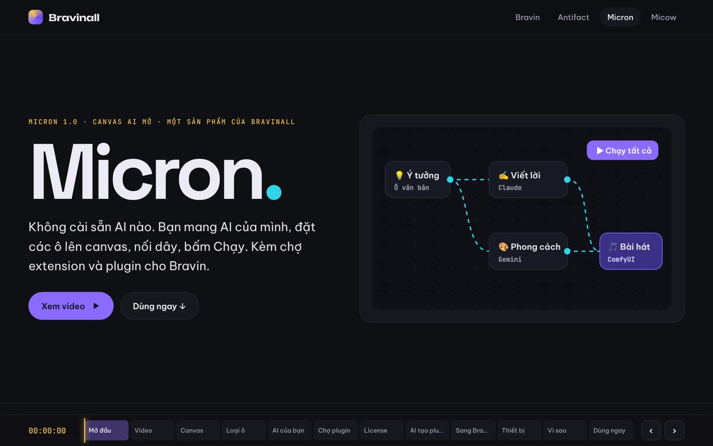
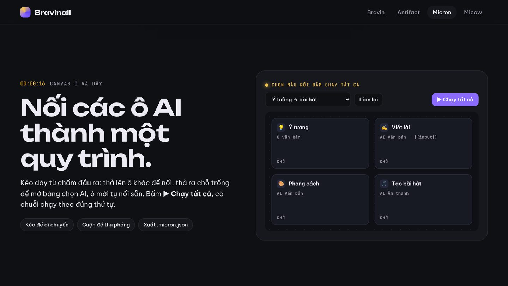

Phạm Việt Hà
Phạm Việt Hà
Mục lục
Phần lớn công cụ AI bắt bạn mua lượt dùng của họ. Micron, canvas AI do Phạm Việt Hà xây, làm ngược lại: không cài sẵn AI nào. Bạn mang AI của mình, đặt các ô lên canvas, nối dây, bấm Chạy.

Nối các ô AI thành quy trình
Kéo dây từ chấm đầu ra: thả lên ô khác để nối, thả ra chỗ trống để mở bảng chọn AI và ô mới tự nối sẵn. Bấm ▶ Chạy tất cả, cả chuỗi chạy theo đúng thứ tự.

Văn bản, ảnh, âm thanh, video
Viết {{input}} trong lời nhắc để chèn kết quả của ô phía trước. Một chuỗi có thể đi từ kịch bản, tạo ảnh, tạo giọng đọc đến tạo nhạc. Ví dụ một quy trình làm bài hát:
- Ô Ý tưởng: vài dòng văn bản.
- Ô Viết lời: dùng Claude.
- Ô Phong cách: dùng Gemini.
- Ô Bài hát: đưa sang AI tạo nhạc.
Mang AI của bạn
Micron không bán lượt AI. Bạn thêm AI bằng khoá API riêng (Claude, OpenAI, Gemini…) hoặc dùng AI chạy ngay trên máy. Khoá API chỉ lưu trong trình duyệt và chỉ gửi tới đúng địa chỉ AI bạn nhập. Mỗi ô dùng một AI khác nhau cũng được.
Chợ tiện ích cho Micron và Bravin
| Plugin | Làm gì |
|---|---|
| Motion Tracking | Theo dõi phối cảnh, thay màn hình, gắn chữ, làm mờ |
| Micron AI | Viết chữ đặt thẳng lên timeline Bravin, tạo ảnh phủ, giọng đọc |
| Micron ↔ Bravin | Nút Gửi sang Bravin dưới mỗi kết quả |
| Review Công Nghệ Pro | Thông số, ưu nhược, kịch bản 60 giây, caption, teleprompter |
| Bravin Bán Hàng | USP, mẫu quảng cáo, kịch bản livestream, lịch đăng 7 ngày |
| Nhạc AI | Lời bài hát có cấu trúc, mô tả phong cách |
Plugin trả phí mua một lần, dùng vĩnh viễn: quét mã QR ngân hàng, nhận mã license có chữ ký số, chạy offline, không cần đăng nhập.

AI dựng plugin cho bạn
Mô tả plugin bạn cần, AI của bạn dựng mẫu quy trình, ô AI và artifact (ứng dụng nhỏ chạy trong ô). Artifact chạy trong khung cách ly nên không đọc được khoá API hay dự án của bạn.
 Mở MicronThêm AI của bạn và bấm Chạy
Mở MicronThêm AI của bạn và bấm Chạy
 Đọc thêmHệ sinh thái Beta của Phạm Việt Hà: Bravin, Antifact, Micron, Micow và Beta HQ
Đọc thêmHệ sinh thái Beta của Phạm Việt Hà: Bravin, Antifact, Micron, Micow và Beta HQ